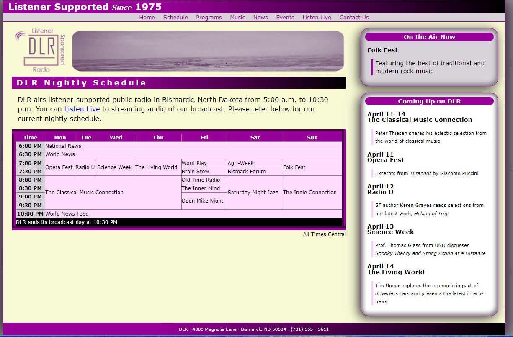
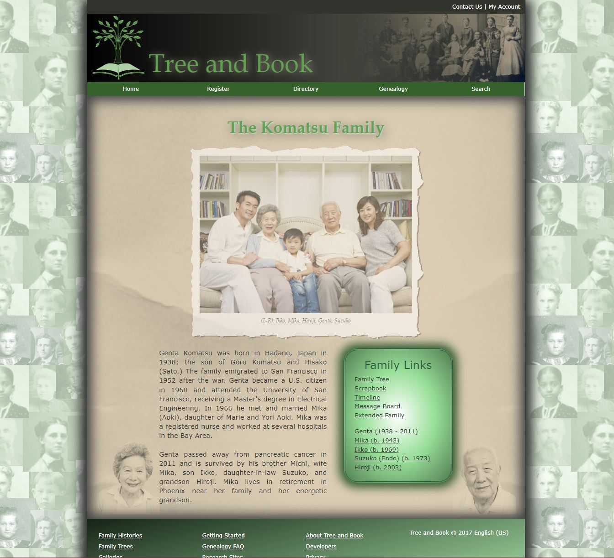
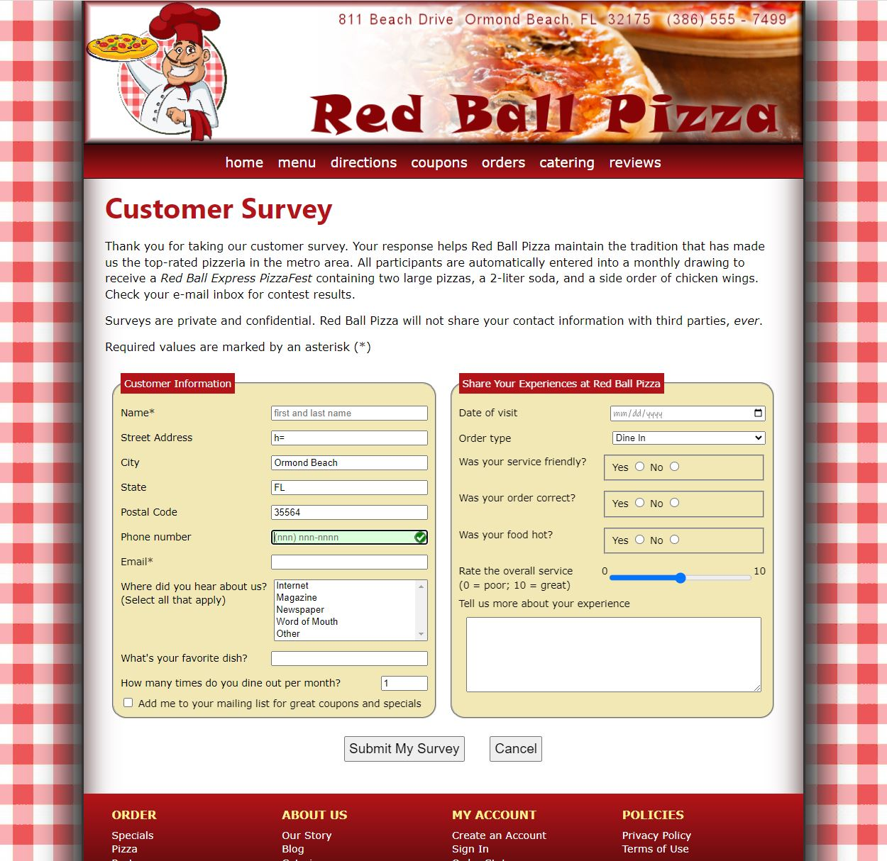
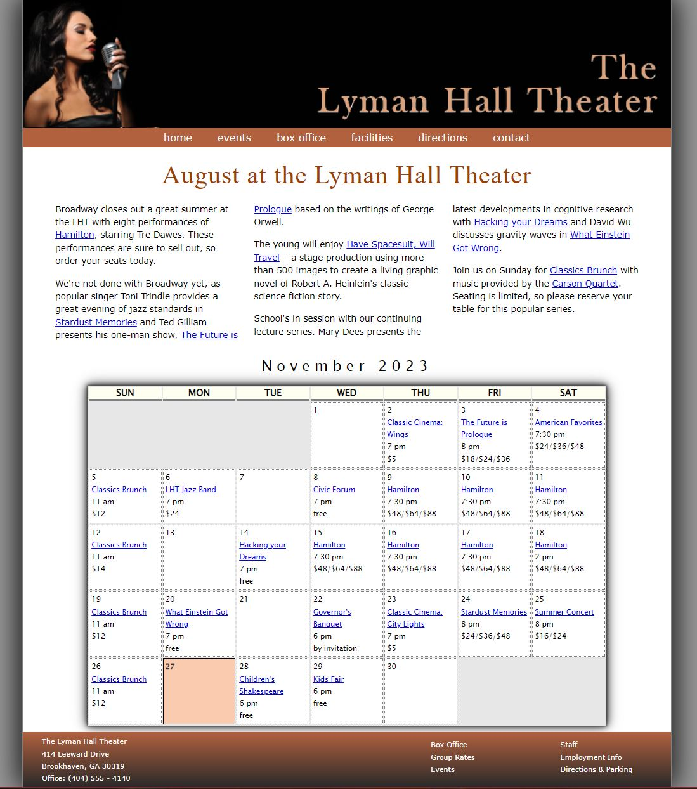

Learning Activities
1-1 Curbside Thai

This assignment was about learning the basics of HTML without having to work on styles as well.
1-3 Try and Succeed Sports

This assignment was about learning basic CSS by adding style to a website already built.
2-1 Pandaisia Chocolates

This assignment was to learn how to build a layout to pages and the few different ways you can do it.
2-3 Dakota Listener Radio
This assignment was to learn how to build a table in a webpage and style it.
3-1 Komatsu Family
This assignment was to learn a bunch of graphic design elements in CSS.
3-4 Red Ball Pizza
This assignment was to learn about how to create a user form to gain user input.
5-1 Tulsa's New Year Bash

This assignment was to start learning the basics of javascript.
5-3 Lyman Hall Theater
This assignment was to learn arrays, loops, and conditions in javascript.